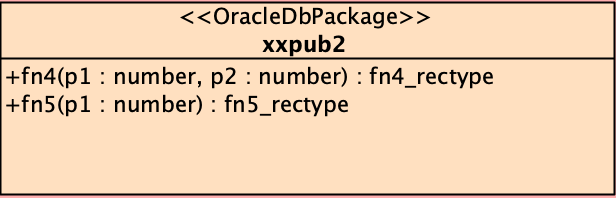
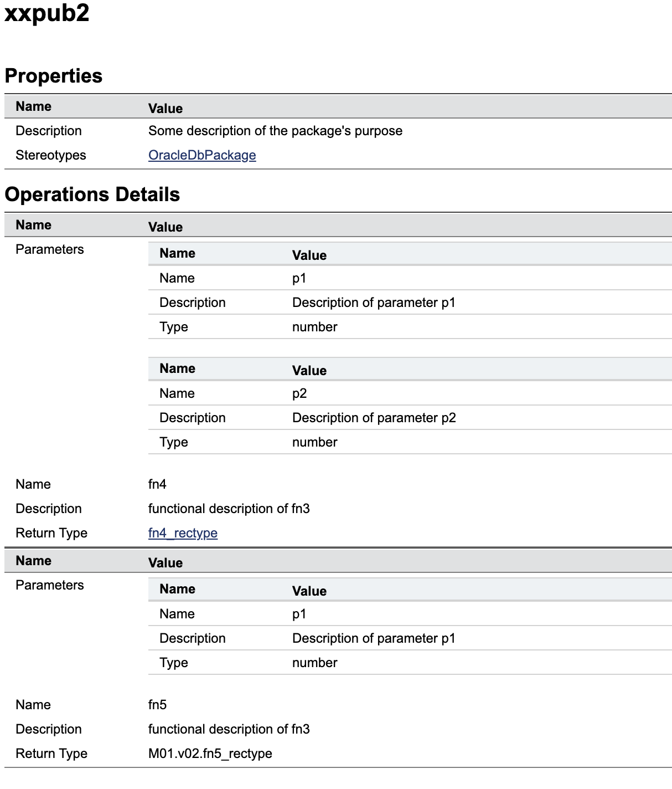
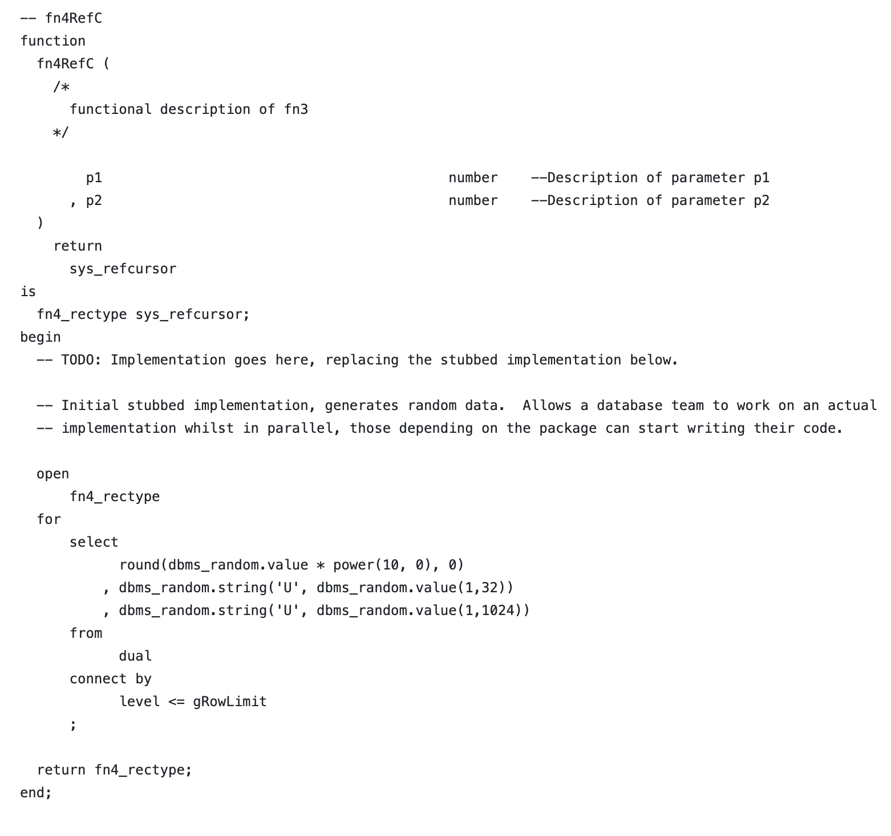

Modeling PL/SQL with UML A code model is a representation of a code-base, abstracting away details, such as the detailed code logic. UML is an excellent standard with which to model almost any code, and works well for Oracle database code objects (packages, functions and procedures).  A UML Class, modeling a database code object
With a UML model of a code-base, a modeler (usually a designer, senior developer, or architect) can consider an abstracted representation of the code, allowing them to focus on issues such as how code objects should interface with one another, and what code to change or extend. A well articulated model will include descriptions captured at package, method and parameter level, with those descriptions providing enough technical and functional detail that one can assimilate, at a high level, what the purpose of each code object is. All UML tools provide for functionality to view UML diagrams. Better UML tools will also provide functionality for some form of model detail to be generated from a UML model (since not all details are shown visually on UML diagrams, such as element descriptions). Such model detail can serve as a specificiation for a developer:  A model detail generated from a UML class, that can serve as a specification for a developer
One way to develop code is with a model-first approach. With a model-first approach, a modeler considers what each piece of code should do, in advance of any code being written. This approach generally results in better conceptualized code, with fewer pieces of code needing to be later refactored, because codes do not work together. Of more value though, with a model-first approach, is the possiblity to generate scafolding-code (the boiler-plate portions of the code) from the model, reducing the amount of code that needs to be hand-written, and also transferring documentation (descriptions) from the model to the code:  A sample of scafolding-code generated from a UML class
The remainder of this document steps through using UML to generate PL/SQL code. [Next] |
||||||||||||||||||